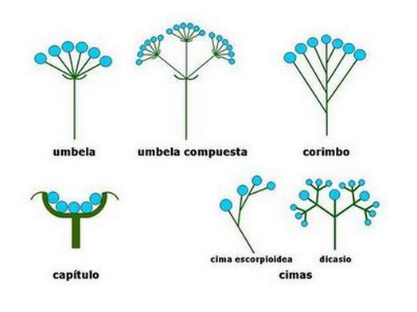

Albizia julibrissin Durazz. (Árbol de la seda)
Oriunda de Asia subtropical (India, Taiwan, China…). Se parece mucho a las acacias (género Acacia) y hasta hace unos años la especie Albizia pertenecía a este género. Al final, por presentar múltiples características diferentes se la elevó a género separándola de las acacias.

Entre junio y julio se pueden ver sus llamativas inflorescencias (se dice así del conjunto de flores que crecen de un mismo tallo o cuyo brote inicial se ramifica) globosas de colores blancos y algo rosados. Tienen forma de mazorca en la parte final de las ramas y los estambres son muy largos y de color rosa. Estas inflorescencias atraen a muchas mariposas y tienen un intenso olor.
Presenta una gran umbela (ver dibujo) y es de hoja caduca.
El género toma nombre por el naturalista florentino Filippo degli Albizzi, que lo introdujo en Europa desde Constantinopla en el 1749.
Las hojas se utilizan para forrajeo y las semillas son muy tóxicas para las larvas de algunas polillas. En China usaban los tallos secos para hacer tónicos sedantes.
La corteza de Albizia anthelmintica, otra especie del género, se usa en algunas zonas de África por los pastores para ayudar a tratar a los animales afectados por gusanos parásitos en su interior (helminto significa gusano).
Ficha técnica:
Familia: Leguminosae
Origen: Este y Sureste de Asia
Altura máxima: 10 metros
Época de floración: junio-agosto
Otros datos: Legumbres de hasta 20 cm de longitud
Albizia julibrissin Durazz. (Silk tree)
Native to subtropical Asia (India, Taiwan, China…), the silk tree strongly resembles acacias (Acacia genus). In fact, the Albizia species belonged to that genus until recently, when it was classed as a genus separate from acacias due to several characteristics.
Between June and July, its eye-catching inflorescences can be seen. Inflorescences are groups of flowers growing from the same stem, or with an initial bud branching out. Silk trees have globose, white and pinkish inflorescences, which are arranged in panicles at the ends of branches, with very long, pink stamens. These inflorescences attract many butterflies and have an intense smell.
It is a deciduous tree showcasing a large umbel (see picture).
The genus takes its name from Florentine naturalist Filippo degli Albizzi, who introduced the tree in Europe from Constantinople in 1749.
The leaves are used as forage and the seeds are highly toxic for the larva of different types of moth. In China, dry stems were used to brew sedatives.
The bark of Albizia anthelmintica, another species in the genus, is used in some parts of Africa by shepherds to help treat animals infected by internal parasitic worms (helminth means worm).
Fact Sheet:
Family: Leguminosae
Origin: East and Southeast Asia
Maximum Height: 10 metres
Flowering Period: June-August
Other Data: Fruit pods of up to 20cm long
Pròximament...